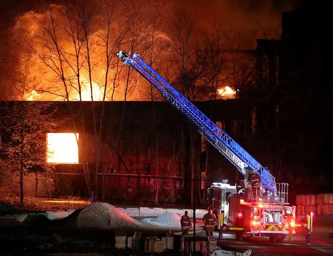

Timeline photos
There was a big fire last night at an abandoned factory at the end of Beech Street near the Interbelt Nite Club.
The Beacon Journal story doesn't say what caused the fire. But I have a guess: Homeless people.
They probably were living in there. They made a fire to keep warm and then it got out of control.
People make campfires all the time inside buildings because they are cold. It's a big reason you see so many burned-out houses in certain areas of Akron.
We have a choice: We can say mean things about homeless people. Or we can do something about the fact that there are people, HUMAN BEINGS, wandering around the streets of Akron with nowhere to sleep.
Sleep is a required activity of humans. It's right after air. We can live much longer without food than we can sleep.
We have one men's shelter in Akron: The Haven of Rest. It is an extremely Christian facility that throws people out all the time. I'm glad we have them. But I'm just telling you the fact of the matter. They refuse to serve certain men.
If you want less fires of abandoned buildings in Akron we need more shelters for homeless people. Those things are directly connected.
And no. I don't want the government to pay for it. I want it to be privately funded. I've wanted nothing more than to shelter Akron's homeless people for over 8 years and I've been fought every step of the way. Maybe now that will change with the Malik Administration.
We'll see.